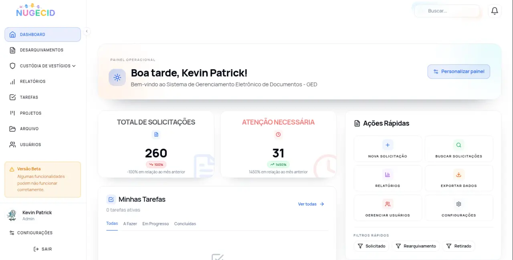
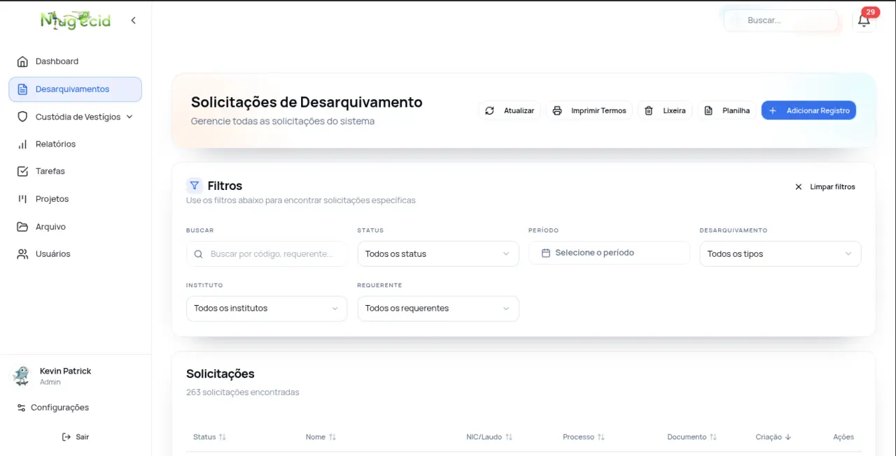
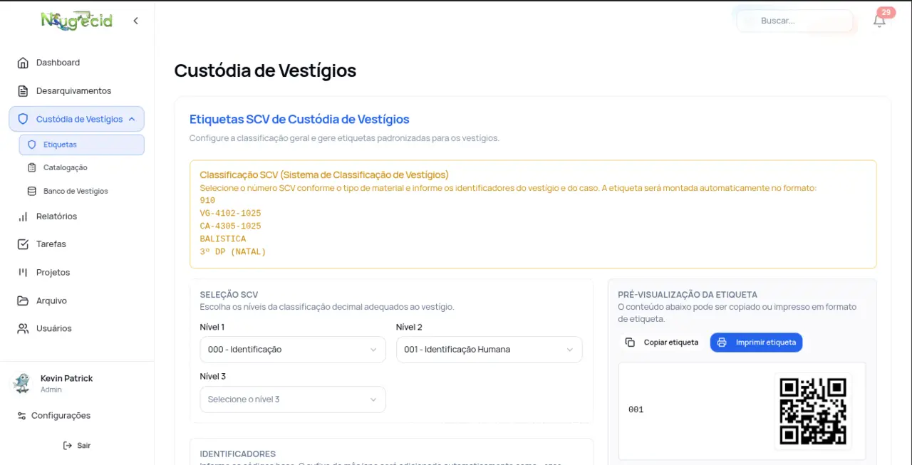
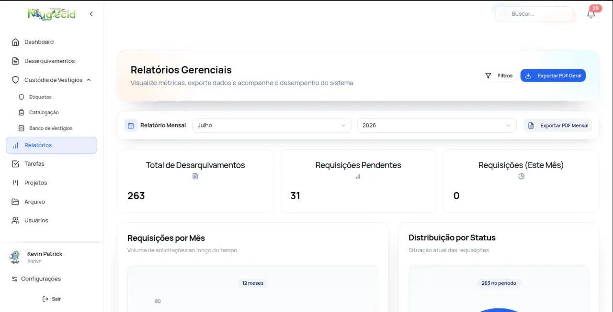

Uso interno
SGC — Sistema de Gestão de Documentos e Desarquivamentos
Sistema que organiza os fluxos de desarquivamento, os documentos e os relatórios operacionais da Polícia Científica do Rio Grande do Norte.
O que o sistema faz
- Desarquivamentos — cadastro, acompanhamento, importação em lote (XLSX/CSV), exportação, emissão de termos em PDF/DOCX, comentários, anexos, lixeira e códigos de barras.
- Dashboard operacional — estatísticas em tempo real, gráficos e relatórios mensais em PDF.
- Tarefas e projetos (Kanban) — colunas com limite de trabalho em andamento, prioridades, prazos, tags, checklists, subtarefas e comentários.
- Vestígios e custódia — catalogação, busca por código SCV e estatísticas.
- Arquivos e pastas — upload, download, visualização de imagens e organização com tags.
- Planilhas de controle — upload e download das planilhas de desarquivamento.
- Usuários e perfis — quatro níveis de acesso, preferências, avatar e bloqueio automático.
- Notificações — no sistema, push no navegador e preferências por canal e tipo.
- Busca unificada — busca em texto completo em todo o acervo do sistema.
- Auditoria e backup — trilha de auditoria das ações e rotina de backup do banco de dados.
O acesso é restrito à rede institucional da PCIRN, por se tratar de sistema com dados administrativos e documentais internos.
Stack técnica
| Camada | Tecnologia |
|---|---|
| Backend | NestJS, TypeScript, TypeORM |
| Frontend | React, Vite, TypeScript, TailwindCSS |
| Banco de dados | PostgreSQL |
| Cache e sessões | Redis |
| Infraestrutura | Docker Compose, Nginx |
| Testes | Jest, Vitest, Testing Library, Playwright |
Integrações e recursos
- SEI — captura de processos do sistema eletrônico de informações.
- Escavador SEIRN — recebimento de publicações por webhook.
- Metabase — painéis de business intelligence.
- OCR — reconhecimento de texto em documentos digitalizados.
Telas do sistema



